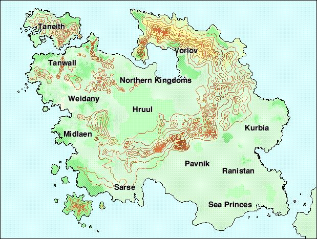

|
Isle of EuressaDanchaThe land of the Druids. CanchaA region inhabited by a number of clans united under a single king. HerzonThe small theocracy of Herzon is ruled by the tyrannical cult of the death god Uir. It is a poor land, bordered by the haunted Lamenting Hills. Hruul ForestA vast expanse of thick forest land, generally unexplored. NailandMostly uncivilised, Nailand is home to the short folk, a race of not-quite humans who inhabited the island before man came to it. They are fighting a perpetual war with the Kingdom of Rorn. How far their lands stretch back into the Hruul Forest is unknown. TanwallTanwall is a collection of minor kingdoms, nestled amongst the thick forests of the northwestern coast. Many of its people worship various animal powers, and its warriors can take on the form of their beast god. The people here are not greatly trusted by their neighbours. Though they rarely venture forth from their own lands, there is a certain inhumaness about them, which makes other people uneasy. VorlovEncircling the northern edge of the Falthy Sea, Vorlov is considered uninhabited by those who ply the sea's waters. Uninhabited by man at any rate. The powers of the Ice hold sway there, and the coast is considered too dangerous to land anywhere north of the Grey Forest. Further inland is thought to be worse. |
|
This page is maintained by
Samuel Penn.
Last updated on 25th March, 2001. |


|